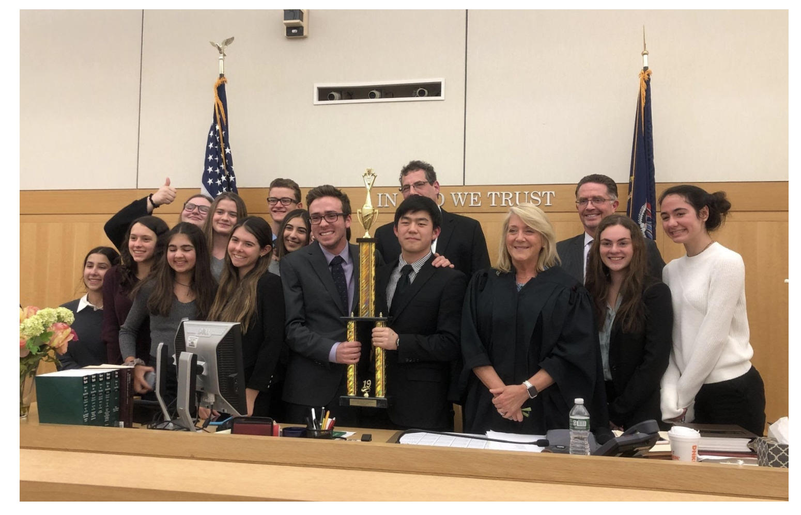
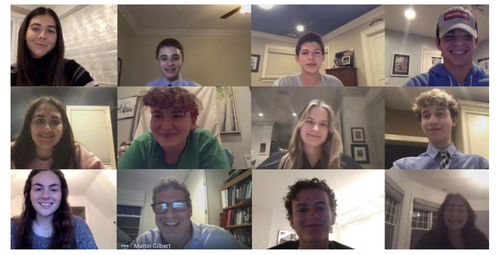

Mock Trial
The Mock Trial Club works as a team to tackle debatable cases of law - many of which are inspired by actual trials argued in the American legal system. Students who participate break down the case, acting as lawyers and witnesses representing either the prosecution or the defense side. Lawyers and witnesses have a variety of evidence, witness affidavits, and case law at their disposal. The Mock Trial Team participates in a county-wide tournament in March. Those chosen to represent the team as lawyers or witnesses travel to the Westchester County Courthouse and are given the opportunity to present their case in front of a real Judge, in an active courtroom, and against another team. More of a team than a club, Mock Trial fosters a community unlike others as the team works together to advance in the tournament and win the championship. If you are interested in learning more about the law, becoming a better debater, learning to think on your feet, or perhaps even becoming a lawyer one day, Mock Trial is the club for you.
The club starts up in late October and typically meets one afternoon a week for one and a half hours starting in November and continuing through the Spring. The majority of time commitment occurs as it gets closer to competition time in February and March. Case law homework sometimes applies. Typically, the club meets Tuesday after school to discuss the parameters of the case.
Club Advisor: Mr. Martin Gilbert (mgilbert@byramhills.org)
 